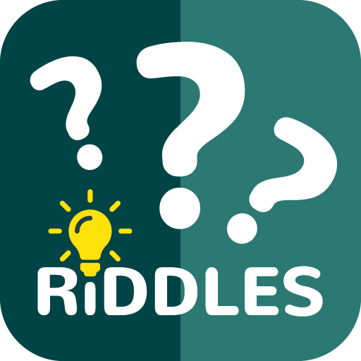

What goes up when the rain comes down?
An umbrella.
What did Mrs. Claus say to Santa when she looked up in the sky?
Looks like rain dear.
When is a doctor most annoyed?
When he is out of patients.
I have no feet, no hands, no wings, but I climb to the sky. What am I?
Smoke.
Which part of a road do Ghost's love to travel the most?
The Dead End.
I am full of holes but I can still hold water. What am I?
A sponge!
What 7 letter word is spelled the same way backwards and forwards?
Racecar.
When is it bad luck to see a black cat?
When you are a mouse.
If you have me, you want to share me. If you share me, you haven't got me. What am I?
A Secret.
I can be cracked, I can be made. I can be told, I can be played. What am I?
A Joke!
What are moving left to right, right now?
Your eyes!
Who is never hungry during Christmas?
The turkey because he is always stuffed.
Which is the only way a leopard can change his spots?
By going from one spot to another.
I'm tall when I'm young and I'm short when I'm old. What am I?
Candle or Pencil.